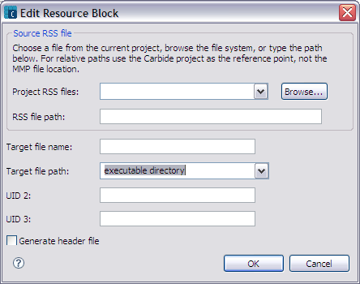

The MMP editor resource block dialog allows you to add or remove resource files to your project. The Edit Resource Block dialog is shown in Figure 1. You can add, remove or edit resource files to be included with your project.

Figure 1 - MMP Editor Resource Block Dialog
| Name | Function |
|---|---|
|
Project RSS files |
Select or browse to the resource file to be included in all builds. |
|
RSS file path |
Enter the path to the resource file. |
| Target file name | Enter the target file name. |
| Target file path | Select the target file path, such as the executable directory or /resource directory on the target device. |
| UID 2 | Enter the unique identifier. UID2 may need to be a specific value for some kinds of DLLs, especially those used by plug-in frameworks. |
| UID 3 | Enter the unique identifier. In the current implementation of platform security, UID3 is used as the Secure ID if SECUREID is not specified in the .mmp file. If it is specified, UID3 will be used to identify the application as its original purpose. However, the SID is used to determine which private directory a process can access as well as to identify the caller applications, whereas the UID is used to uniquely identify an application. It is theoretically possible that these two identifiers could have different values, but to avoid confusion Symbian recommends that a SECUREID not be specified in the application's MMP file; UID3 should always be specified instead. |
| Generate header file | Check this option to generate a header file for the resource files. |